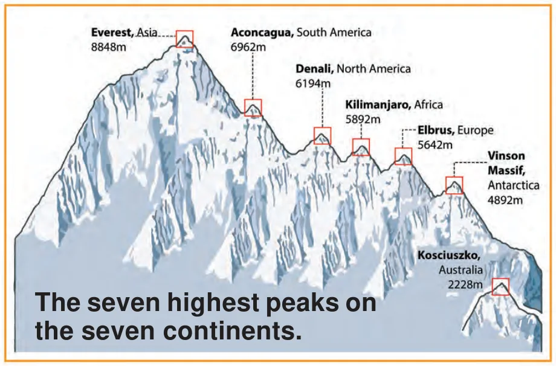

What is \(5642 \times 2\)?
While preparing visually-appealing presentations of data, we also need to be careful that the pictures we draw do not mislead us about the facts. In general, it is important to be careful when making or reading infographics, so that we do not mislead our intended audiences and we, ourselves, are not misled.
Facts, numbers, measures, observations and other descriptions of things that convey information about those things is called data. Data can be organised in a tabular form using tally marks for easy analysis and interpretation. Frequencies are the counts of the occurrences of values, measures or observations.
Pictographs represent data in the form of pictures, or objects or parts of objects. Each picture represents a frequency which can be 1 or more than \(1 -\) this is called the scale and it must be specified. Bar graphs have bars of uniform width; the length or height that indicates the total frequency of occurrence. The scale that is used to convert length or height to frequency again, must be specified. Choosing the appropriate scale for a pictograph or bar graph is important to accurately and effectively convey the desired information or data and to also make it visually appealing. Other aspects of a graph also contribute to its effectiveness and visual appeal such as how colours are used, what accompanying pictures are drawn, and whether the bars are horizontal or vertical. These aspects correspond to the artistic and aesthetic side of data handling and presentation. However, making visual representations of data ‘fancy’ can also sometimes be misleading. By reading pictographs and bar graphs accurately, we can quickly understand and make inferences about the data presented.